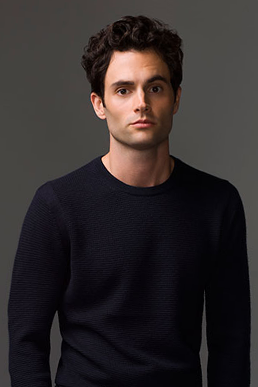
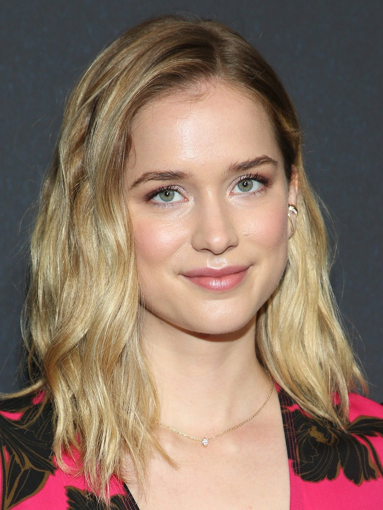
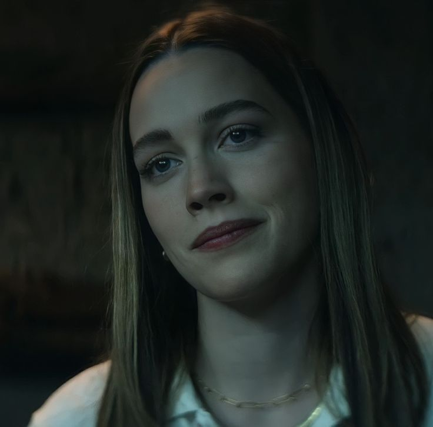
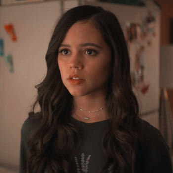
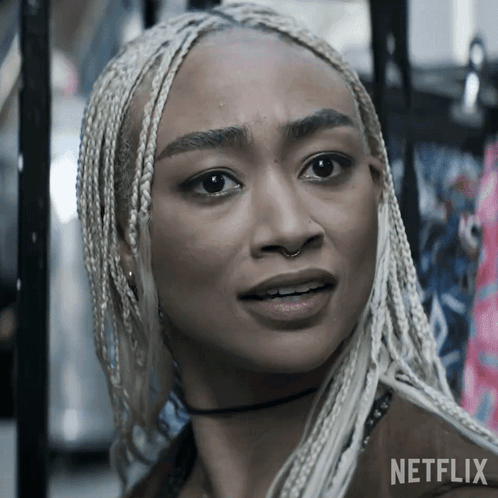
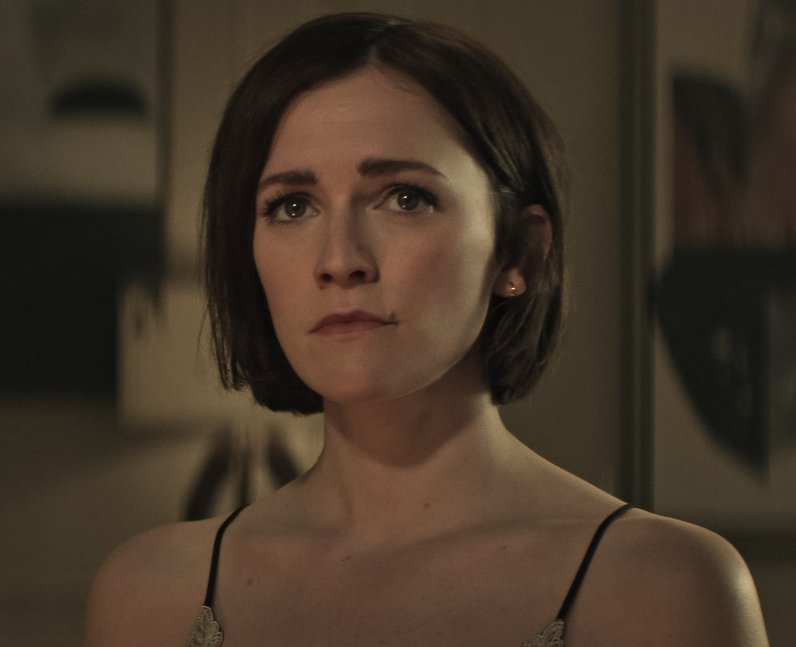

Penn Badgley (Joe Goldberg)
Joseph “Joe” Goldberg is a fictional character from the You series and the novel Perfect by Caroline Kepnes. He is the main protagonist in both the book and the adapted series. He is mainly played by Penn Badgley in the series.
Elizabeth Lail (Beck)

Elizabeth Dean Lail, born March 25, 1992 in Texas, is an American actress. She was noticed for her interpretation of Anna in the television series Once Upon a Time, then she was the heroine of the first season of You.
Victoria Pedretti (Love Quinn)

Love Quinn-Goldberg is a central character in the second and third seasons of YOU, Joe's new obsessive love interest and later main antagonist. She is played by Victoria Pedretti.
Jenna Ortega (Ellie Alves)

Ellie Alves is a main character in the second season of YOU. She is played by Jenna Ortega.
Ambyr Childers (Candace Stone)
Candace Stone is a main character and an antagonist of Netflix's You, having a recurring role in the first season and serving as the main antagonist of the second season. She is portrayed by Ambyr Childers.
Tati Gabrielle (Marienne Bellamy)

Marienne Bellamy is a main character of Netflix's You, serving as the titular love interest of the third season. She is portrayed by Tati Gabrielle.
Charlotte Ritchie (Kate)

Katherine Galvin, better known as Kate, is a main character in the fourth season of YOU, serving as Joe's titular love interest. She is played by Charlotte Ritchie.